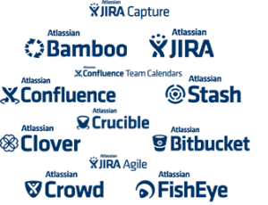
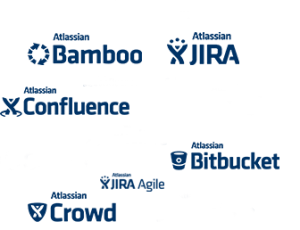
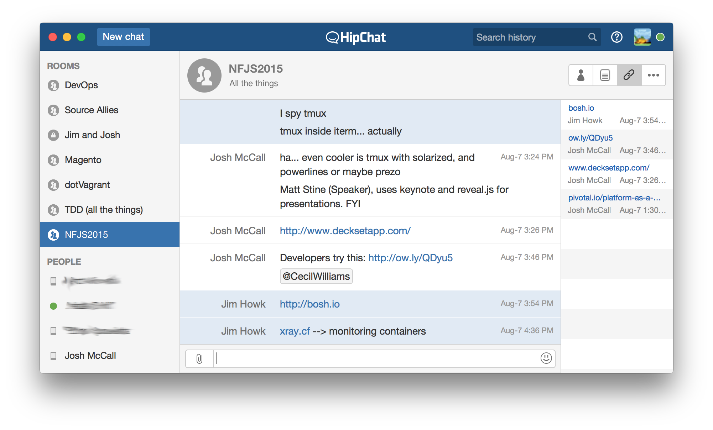
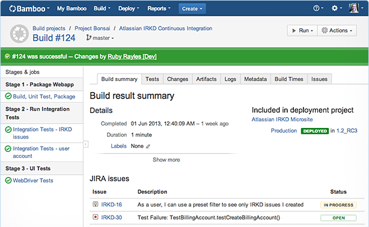
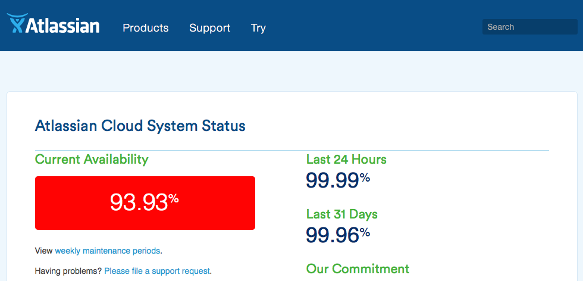
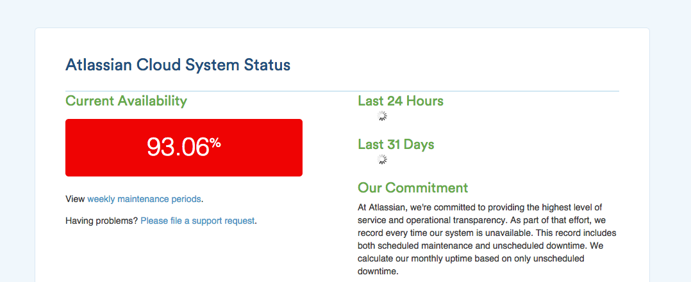

name: inverse layout: true class: center, middle, inverse --- .center[ #Atlassian @ ###The duality of the Atlassian Suite at the SAI Office </br> <img src="./images/solarized-yinyang.png " style="width: 300px;"/> ] ??? #Introduce yourselves : </br> ##Jim Howk & Josh McCall from Source Allies </br> --- layout: false .left-column[ ##Talking Points: ] .footnote[] ??? slide 1 #"Here is what to expect." --- layout: false .left-column[ ##Talking Points: ] .right-column[ ##Atlassian Suite ] .footnote[] ??? slide 2 #"We will overview the majority of the Atlassian suite." --- layout: false .left-column[ ##Talking Points: ] .right-column[ ###Atlassian Suite ##SAI Subset </br> (what we use) ] .footnote[] ??? slide 3 #"We will discuss which tools Source Allies uses daily." --- layout: false .left-column[ ##Talking Points: ] .right-column[ ###Atlassian Suite ###SAI Subset </br> (what we use) ##Successes and Challenges ] .footnote[] ??? slide 4 #"We will deep dive on some of the successes and challenges </br> # we have encountered with Atlassian tools." --- layout: false .left-column[ ##Talking Points: ] .right-column[ ###Atlassian Suite ###SAI Subset </br> (what we use) ###Successes and Challenges ## Questions ] .footnote[] ??? slide 5 </br> #"We are happy tackle any questions you may have." </br> # END OF YOUR INTRO ! # THIS IS THE END OF THE INTRO! --- layout: false .left-column[ ##Talking Points: ##Atlassian Suite ] .footnote[] ??? slide 1 # BEGIN TALKING ABOUT ACTUAL SOFTWARE TOOLS! # "Atlassian provides a whole host of tools to meet your needs." --- layout: false .left-column[ ##Talking Points: ##Atlassian Suite ] .right-column[ </br> </br> </br> </br> <img src="./images/atlassian_logos_various_small.png" style=" width: 600px;"/> ] .footnote[] ??? slide 2 # OLDER ATLASSIAN LOGOS # "Atlassian has a ton of solutions # and some of them change naming and branding over time" --- layout: false .left-column[ ##Talking Points: ##Atlassian Suite ] .right-column[ </br> </br> </br> </br>  ] .footnote[] ??? slide 2 # NEWER ATLASSIAN LOGOS # INTRODUCE WHAT EACH TOOL DOES STARTING HERE: --- layout: false .left-column[ ##Talking Points: ##Atlassian Suite ] .right-column[ </br> </br> </br> </br> <script src="./video.js"></script> <video id="rebranding" class="video-js vjs-default-skin" controls preload="auto" width="600" height="337" poster="./images/splash-fallback.jpg" data-setup="{}"> <source src="./images/splash.mp4" type='video/mp4'> </video> https://confluence.atlassian.com/migration/jira-7 ] .footnote[] ??? slide 2 # REBRANDING: --- layout: false .left-column[ ##Talking Points: ##Atlassian Suite ] .right-column[ </br> </br> </br> </br> ] .footnote[] ??? slide 2-2 # NEWER ATLASSIAN LOGOS - ##JIRA : - Ticket Tracking - ##Confluence : - Wiki - ##HipChat : - Chat --- layout: false .left-column[ ##Talking Points: ##Atlassian Suite ] .right-column[ </br> </br> </br> </br> ] .footnote[] ??? slide 2-2 # NEWER ATLASSIAN LOGOS - ##Stash : - local repo - ##Bitbucket : - cloud repo - ##Bamboo : - build server + testing : - Test Optimization to make your tests run faster and fail more quickly. --- layout: false .left-column[ ##Talking Points: ##Atlassian Suite ] .right-column[ </br> </br> </br> </br> ] .footnote[] ??? slide 2-2 # NEWER ATLASSIAN LOGOS - ##Fisheye : - Search, monitor, and track your Subversion repositories. - ##Crucible : - Peer Code Review / Find bugs and improve code quality through peer code review. - ##Clover : - Test Optimization to make your tests run faster and fail more quickly. - ##SourceTree : - free Git and Mercurial desktop client for Mac and Windows. --- layout: false .left-column[ ##Talking Points: ##Atlassian Suite ] .right-column[ </br> </br> </br> </br> ] .footnote[] ??? slide 2-2 # NEWER ATLASSIAN LOGOS - ##Crowd : - user managment - ##Confluence Team Calendars - ##Confluence SharePoint Connector - ##Confluence Questions : - like stackoverflow - Ask questions, get answers, and identify experts. --- layout: false .left-column[ ##Talking Points: ##Atlassian Suite ] .right-column[ </br> </br> </br> </br> ] .footnote[] ??? slide 2-2 # NEWER ATLASSIAN LOGOS - ##JIRA Agile (previously GreenHopper) - ##JIRA Capture (previously Bonfire) - Rapid bug reporting for session-based web application testing. - ##JIRA Service Desk - Give your customers an easy way to ask for help and your agents a fast way to resolve incidents. - ##JIRA Portfolio (previously Roadmaps) - Connect strategic goals to development realities. --- layout: false .left-column[ ##Talking Points: ###Atlassian Suite ##SAI Subset </br> (what we use) ] .right-column[ </br> </br> </br> </br>  ] .footnote[] ??? slide 3 # SAI # THIS IS WHAT WE USE: - JIRA - Confluence - HipChat - Bamboo - SourceTree - Crowd - JIRA Agile (previously GreenHopper) --- layout: false .left-column[ ##Talking Points: ###Atlassian Suite ##SAI Subset </br> (what we use) ] .right-column[ </br> </br> </br> </br> ] .footnote[] ??? slide 3-1 overview # : overview of SAI tools on the next slides </br> --- layout: false .left-column[ ##Talking Points: ###Atlassian Suite ###SAI Subset </br> (what we use) </br> ##: ~~JIRA~~ : Trac ] .right-column[ ###Every story has a beginning </br> ] .footnote[] ??? # "Everyone starts somewhere." # "Every story has a beginning." #"Trac is what we used before happily switching to JIRA." --- layout: false .left-column[ ##Talking Points: ###Atlassian Suite ###SAI Subset </br> (what we use) </br> ##:JIRA:] .right-column[ </br> </br> </br> ] .footnote[] ??? slide 3-1 overview #: JIRA # JIRA is a ticket tracking system # that we use with JIRA Agile and Confluence. JIRA + Confluence - Its Great - Can't beat it </br> Next slide is JIRA Agile (previously GreenHopper) --- layout: false .left-column[ ##Talking Points: ###Atlassian Suite ###SAI Subset </br> (what we use) </br> ##:JIRA Agile: ] .right-column[ </br> </br> </br> ] .footnote[] ??? slide 3-2 overview # JIRA AGILE # - JIRA Agile used to be called GreenHopper # - "This is our bread and butter tool along with Confluence" # - "We wish JIRA Agile was simply included w/ JIRA ## - as it really makes a difference." --- layout: false .left-column[ ##Talking Points: ###Atlassian Suite ###SAI Subset </br> (what we use) </br> ##: Confluence : ] .right-column[ </br> </br> </br> ] .footnote[] ??? slide 3-3 overview #: Confluence # - confluence is a powerful and flexible wiki. # - It can integrate with JIRA - it can link directly to JIRA tickets and other articles. --- layout: false .left-column[ ##Talking Points: ###Atlassian Suite ###SAI Subset </br> (what we use) </br> ##: Confluence : ] .right-column[ </br> </br> </br> ] .footnote[] ??? slide 3-3-2 overview #: Confluence # - page layouts # - sections # - formatted code blocks! # - Embedded images, videos, pdfs, etc.! --- layout: false .left-column[ ##Talking Points: ###Atlassian Suite ###SAI Subset </br> (what we use) </br> ##: Confluence : ] .right-column[ </br> </br> </br> ] .footnote[] ??? slide 3-3 overview #: Confluence # - powerful and flexible editor - --- layout: false .left-column[ ##Talking Points: ###Atlassian Suite ###SAI Subset </br> (what we use) </br> ##: Confluence : ] .right-column[ </br> </br> </br> ] .footnote[] ??? slide 3-3 overview #: Confluence # - Tips! Notes! Warnings! --- layout: false .left-column[ ##Talking Points: ###Atlassian Suite ###SAI Subset </br> (what we use) </br> ##: Confluence : ] .right-column[ </br> </br> </br> ] .footnote[] ??? slide 3-3 overview #: Confluence # - link your page to JIRA tickets! # - JIRA dynamic status updates! --- layout: false .left-column[ ##Talking Points: ###Atlassian Suite ###SAI Subset </br> (what we use) </br> ##: HIPCHAT : ] .right-column[ </br> </br> </br> ] .footnote[] ??? slide 3-4 overview # : HIPCHAT PRO: ## - one of our favorite features is the url link filter - it extracts any urls from chat sessions into an easy menu. ## - you can comment JIRA and Confluence pages directly ## - you can stream tweet feeds in. --- layout: false .left-column[ ##Talking Points: ###Atlassian Suite ###SAI Subset </br> (what we use) </br> ##: HIPCHAT : ] .right-column[ </br> </br> </br>  ] .footnote[] ??? slide 3-4 overview # : HIPCHAT PRO: ## - one of our favorite features is the url link filter - it extracts any urls from chat sessions into an easy menu. ## - you can comment JIRA and Confluence pages directly ## - you can stream tweet feeds in. --- layout: false .left-column[ ##Talking Points: ###Atlassian Suite ###SAI Subset </br> (what we use) </br> ##: BAMBOO : ] .right-column[ </br> </br> </br>  ] .footnote[] ??? slide 3-5 overview # : Bamboo - build system - Alternative to Jenkins - Local Bamboo and Cloud options available --- layout: false .left-column[ ##Talking Points: ###Atlassian Suite ###SAI Subset </br> (what we use) </br> ##: SourceTree : ] .right-column[ </br> </br> </br> ] .footnote[] ??? slide 3-6 overview # : SourceTree ## nice commit history tree graph --- layout: false .left-column[ ##Talking Points: ###Atlassian Suite ###SAI Subset </br> (what we use) </br> ##: Crowd : ] .right-column[ </br> </br> </br> ] .footnote[] ??? slide 3-7 overview # : Crowd - we use crowd as a web front-end to our ldap system. # NEXT SECTION STARTS SUCCESSES AND CHALLENGES! --- layout: false .left-column[ ##Talking Points: ###Atlassian Suite ###SAI Subset </br> (what we use) ##Successes and Challenges ] .right-column[ </br> </br> </br> <img src="./images/challenge-success.jpg" style=" width: 500px;"/> ] .footnote[] ??? section 4 #" Deep Dive with Successes and Challenges with Atlassian Tools" --- layout: false .left-column[ ##Talking Points: ###Atlassian Suite ###SAI Subset </br> (what we use) </br> ##Successes and Challenges ##:Atlassian Suite: ] .right-column[ </br> </br> </br> #"SO WORTH IT!!!" ] .footnote[] ??? section 4-2 overview - Hosted vs cloud - subset of addons - Slow performance was reason to upgrade - improvement but still slow - SO WORTH IT!!!!! - Admin Cost - 1/4 of persons time was updating - latest features - Clients on different (ancient versions) - slow to developers - best option --- layout: false .left-column[ ##Talking Points: ###Atlassian Suite ###SAI Subset </br> (what we use) </br> ##Successes and Challenges ##:Atlassian Suite: ] .right-column[   ] .footnote[] ??? section 4-2 overview Self Hosted (5-6 years) - "Cumbersome Process" - Backups - Updates - Plugins Moving to the Cloud - wanted to achieve "single sign" for consultants - Our own systems (zimbra, jira, etc...) </br> + </br> Client Systems ( Outlook, jira, etc...) </br> = </br> A lot of sign ons to remember! Why not sooner? - Local Crowd + Jira Cloud - Not a smooth process - Hosted vs cloud - subset of addons - Slow performance was reason to upgrade - improvement but still slow - SO WORTH IT!!!!! - Admin Cost - 1/4 of persons time was updating - latest features - Clients on different (ancient versions) - slow to developers - best option - Cloud products - Subset of add-ons / extensions - can't be all things to all people --- layout: false .left-column[ ##Talking Points: ###Atlassian Suite ###SAI Subset </br> (what we use) </br> ##Successes and Challenges ##:Atlassian Suite: ] .right-column[ ] .footnote[] ??? section 4-2 overview Cons: - Inability to be authenticated against local LDAP server - Longstanding ticket for hosted product authenticated against hosted LDAP - "Most requested ... Odd that its not being worked on" - Atlassian Rep - Cloud products - Subset of add-ons / extensions - can't be all things to all people Atlassian Public image - doesnt make sense for long standing tickets - Ultimately results in requesting consultants to have multiple signs - note: welcomed trade off compared to maintenance of locally hosted - Cloud products - Subset of add-ons / extensions - Moving to the cloud ( Importing) - Multiple week ordeal - Support was great - Sales was a letdown - licensing - Pricing was very low - Give and take for sales feedback --- layout: false .left-column[ ##Talking Points: ###Atlassian Suite ###SAI Subset </br> (what we use) </br> ##Successes and Challenges ##:JIRA Agile: ] .right-column[ </br> </br> </br> ] .footnote[] ??? - Before my time, and when I asked - Not a lot to say about trac other than - Jira was a welcomed change - (2 -3 years) - Storyboards for clients - Client visibility of agile boards - Product Owners - adjust priority Cons: - Setting up client permissions - Option log in / view as this user ( security perspective ) - admin tool / preview option - Allows Clients to have greater visibility and the ability to act as scrum master / PM / Project Owner competition: - rally - no one likes rally :) > "Supports scrum and agile at clients well" --- layout: false .left-column[ ##Talking Points: ###Atlassian Suite ###SAI Subset </br> (what we use) </br> ##Successes and Challenges ##:JIRA Agile: ] .right-column[ </br> </br> </br> ] .footnote[] ??? section 4-3 overview - "This burndown chart - is at SAI when we successfully estimated - and closed all tickets during a particular sprint." Pros: - Part of suite Cons: - "Too configurable" - Priority / Story Points / Pair Points / Multiple Clients at SAI - Multiple boards - Multiple definitions - Responsiveness (Busy spinning animation) - Cloud vs In House - Uptime: https://www.atlassian.com/cloud/status - 93.06% (screenshot) - 1 hr 40 min / Day down time. - Slow response time = bad for Devs - Cloud / Add-on licenses - prohibitive for smaller organizations Alternatives: - Bugzilla - Date Driven Milestones - Severity of Issues - priority - Trello --- layout: false .left-column[ ##Talking Points: ###Atlassian Suite ###SAI Subset </br> (what we use) </br> ##Successes and Challenges ##: Confluence : ] .right-column[ </br> </br> </br> ] .footnote[] ??? section 4-4 overview Confluence - Offshoot of SnipSnap (open source project) - Rending engine => Confluence - Markup language (google adding color to ticket) Pros: - Confluence Questions - https://www.atlassian.com/software/confluence-questions - Tribal Knowledge - Josh Likes confluence - One area to improve - Suggestions on Organize information - Every year we get someone who wants to restructure hierarchy - Tagging? - Don't need to restructure - Confluence Questions - Simplified interface - Extra $ for licensing - Challenge: Internal best practices - Add, review, remove --- layout: false .left-column[ ##Talking Points: ###Atlassian Suite ###SAI Subset </br> (what we use) </br> ##Successes and Challenges ##: Jira + Confluence : ] .right-column[ </br> </br> #+ ##= # Its Great! Can't beat it!!! ] .footnote[] ??? section 4-4 overview Confluence #"Like any wiki, they need to be maintained, #else content can become outdated." --- layout: false .left-column[ ##Talking Points: ###Atlassian Suite ###SAI Subset </br> (what we use) </br> ##Successes and Challenges ##: Confluence : ] .right-column[ </br> </br> </br> </br> <img src="./images/confluencematrix.jpg" style=" width: 400px;"/> ] .footnote[] ??? section 4-4 overview Confluence #JIRA + Confluence ###- Its Great! ###- Can't beat it!!! - Developers love to improve stuff - Their stuff - Your stuff #"Like any wiki, they need to be maintained, #else content can become outdated." --- layout: false .left-column[ ##Talking Points: ###Atlassian Suite ###SAI Subset </br> (what we use) </br> ##Successes and Challenges ##: HIPCHAT : ] .right-column[ </br> </br> </br> <img src="./images/ hipchat.png" style=" width: 600px;"/> ] .footnote[] ??? section 4-5 overview ##Hipchat - Great - wish we could utilize to fullest potential - Grips: - Many teammates, several locations, many firewalls - xmpp protocol - not port 80 - not well behind corporate firewalls --- layout: false .left-column[ ##Talking Points: ###Atlassian Suite ###SAI Subset </br> (what we use) </br> ##Successes and Challenges ##: BAMBOO : ] .right-column[ </br> </br> </br> ] .footnote[] ??? section 4-6 overview Bamboo - build system Cons: - Appears to not be a big focus for Atlassian - Documentation only supports cookie cutter approach - Would like to see more architects involved in this project - Do not allow bamboo to trigger agents on hosted software - windows server 2012 - Would be nice to point to local hosted machines - windows server 2012 - Alternative - Jenkins - Cost and Maintaince - Local Bamboo - Local Machines vs Amazon AMI Bamboo - build system Ideas / Wishful Thinking - Option - Open Source - Add community support for beta test features --- layout: false .left-column[ ##Talking Points: ###Atlassian Suite ###SAI Subset </br> (what we use) </br> ##Successes and Challenges ##: BAMBOO : ] .right-column[ .center[ </br> </br> </br> </br> <img src="./images/blue-plus-hi.png" style=" width: 100px;"/> </br> ] ] .footnote[] ??? section 4-6-2 overview # Bamboo is married to AWS ... Bamboo - build system - Amazon Web services - Predefined Amazon Machine Image (AMI) - Adding a disk to AMI - Atlassian docs: "Horrible, wrong, deceiving, damaging" - Windows AMI - Update AMI - "Substantial amount of work" - Linux AMI - Amazon Linux (RHEL) - Disk Volume - Scripts / Directories - Init Script for Dependencies - Custom Build (lock files) - Don't waste time downloading / installing already installed packages - Multiple Instances - AMI instances can only mount one drive at a time. - Solution is to convert volume to a snapshot - Updating the EBS Volume and Snapshot: https://allies.atlassian.net/wiki/display/infraoffice/Updating+the+EBS+Volume+and+Snapshot - Multiple instances of Windows - 2012 Server AMI - Install everything - Test - Snapshot - Sysprep - AMI - BambooTest - 20 min Startup - Upgrade to Amazon SSD storage - --- layout: false .left-column[ ##Talking Points: ###Atlassian Suite ###SAI Subset </br> (what we use) </br> ##Successes and Challenges ##: BAMBOO : ] .right-column[ .center[ </br> </br> </br> </br> <img src="./images/blue-plus-hi.png" style=" width: 100px;"/> </br> ] ] .footnote[] ??? section 4-6-2 overview # Bamboo is married to AWS ... - Multiple Instances - AMI instances can only mount one drive at a time. - Solution is to convert volume to a snapshot - Updating the EBS Volume and Snapshot: https://allies.atlassian.net/wiki/display/infraoffice/Updating+the+EBS+Volume+and+Snapshot - Multiple instances of Windows - 2012 Server AMI - Install everything - Test - Snapshot - Sysprep - AMI - BambooTest - 20 min Startup - Upgrade to Amazon SSD storage - Bamboo - Builds with AWS - time / Band with => $$$ - Install Shield - Dynamic vs Static - Server requires logged in user for dlls - Not an option with Amazon AMIs --- layout: false .left-column[ ##Talking Points: ###Atlassian Suite ###SAI Subset </br> (what we use) </br> ##Successes and Challenges ##: SourceTree : ] .right-column[ </br> </br> </br> ] .footnote[] ??? section 4-7 overview - #SourceTree - PRO: - SourceTree is great for beginners - it works similar to "GitHub App" - can show graphical commit trees - Challenge: - Not as quick as cli / terminal - can't use it for all git repo's (at time of writing) - a gui in general can confuse people during the git learning process --- layout: false .left-column[ ##Talking Points: ###Atlassian Suite ###SAI Subset </br> (what we use) </br> ##Successes and Challenges ##: Crowd : ] .right-column[ </br> </br> </br> ] .footnote[] ??? section 4-8 overview Crowd: Pros: - Single Sign On Cons: - ‰ SAI (not pointing to single source): - Atlassian Cloud - Zimbra - Crowd - Windows - AD - Linux Workstations # NEXT SECTION STARTS SUCCESSES AND CHALLENGES! --- layout: false .left-column[ ##Talking Points: ###Atlassian Suite ###SAI Subset </br> (what we use) ##Successes and Challenges </br> ##:~~Bitbucket~~ : </br> : Beanstalk App : ] .right-column[ </br> </br> </br> <img src="./images/Atlassian_Bitbucket_Logo.png" style=" width: 300px;"/> ] .footnote[] ??? section 4-9 # Beanstalk App instead of Bitbucket/Stash... --- layout: false .left-column[ ##Talking Points: ###Atlassian Suite ###SAI Subset </br> (what we use) ###Successes and Challenges ## Questions ] .right-column[ ] .footnote[] ??? section 5 #QUESTIONS AND DISCUSSION --- .center[ #Atlassian @ ### @howkj1 ### @joshmccall221 <img src="./images/solarized-yinyang.png " style="width: 300px;"/> ] ??? ##Jim Howk & Josh McCall from Source Allies </br> # @howkj1 # @joshmccall221 --- --- --- #Intro .footnote[] ??? Intro Suite Subset Trac JIRA Confluence HipChat Stash Bitbucket Bamboo FishEye Crucible Clover SourceTree Crowd Confluence Team Calendars Confluence SharePoint Connector Confluence Questions JIRA Agile (previously GreenHopper) JIRA Capture (previously Bonfire) JIRA Service Desk JIRA Portfolio (previously Roadmaps) --- #Suite Logos cont. .footnote[] ??? --- #Trac  .footnote[] ??? --- #JIRA  .footnote[] ??? --- #Confluence  .footnote[] ??? --- #HipChat  .footnote[] ??? --- #Stash  .footnote[] ??? --- #Bitbucket  .footnote[] ??? --- #Beanstalk  .footnote[] ??? --- #Bamboo   #Amazon AWS  .footnote[] ??? --- #FishEye  .footnote[] --- #Crucible  .footnote[] --- #Clover  .footnote[] --- #SourceTree  .footnote[] --- #Crowd  .footnote[] --- #Confluence Team Calendars  .footnote[] --- #Confluence SharePoint Connector  .footnote[] --- #Confluence Questions  .footnote[] --- #JIRA Agile (previously GreenHopper)  .footnote[] --- #JIRA Capture (previously Bonfire)  .footnote[] --- #JIRA Service Desk  .footnote[] --- #JIRA Portfolio (previously Roadmaps)  .footnote[] --- #Dragon Slayer  .footnote[] --- #Dragon Slayer  .footnote[] --- #Questions     .footnote[] --- #Locally Hosted vs Cloud  .footnote[] --- --- --- --- --- #remark [ri-mahrk] .footnote[Go directly to [project site](https://github.com/gnab/remark)] --- ## What is it and why should I be using it? --- layout: false .left-column[ ## What is it? ] .right-column[ A simple, in-browser, Markdown-driven slideshow tool targeted at people who know their way around HTML and CSS, featuring: - Markdown formatting, with smart extensions - Presenter mode, with cloned slideshow view - Syntax highlighting, supporting a range of languages - Slide scaling, thus similar appearance on all devices / resolutions .red[*] - Touch support for smart phones and pads, i.e. swipe to navigate slides .footnote[.red[*] At least browsers try their best] ] --- .left-column[ ## What is it? ## Why use it? ] .right-column[ If your ideal slideshow creation workflow contains any of the following steps: - Just write what's on your mind - Do some basic styling - Easily collaborate with others - Share with and show to everyone Then remark might be perfect for your next.red[*] slideshow! .footnote[.red[*] You probably want to convert existing slideshows as well] ] --- .left-column[ ## What is it? ## Why use it? ] .right-column[ As the slideshow is expressed using Markdown, you may: - Focus on the content, expressing yourself in next to plain text not worrying what flashy graphics and disturbing effects to put where As the slideshow is actually an HTML document, you may: - Display it in any decent browser - Style it using regular CSS, just like any other HTML content - Use it offline! As the slideshow is contained in a plain file, you may: - Store it wherever you like; on your computer, hosted from your Dropbox, hosted on Github Pages alongside the stuff you're presenting... - Easily collaborate with others, keeping track of changes using your favourite SCM tool, like Git or Mercurial ] --- template: inverse ## How does it work, then? --- name: how .left-column[ ## How does it work? ### - Markdown ] .right-column[ A Markdown-formatted chunk of text is transformed into individual slides by JavaScript running in the browser: ```remark # Slide 1 This is slide 1 --- # Slide 2 This is slide 2 ``` .slides[ .first[ ### Slide 1 This is slide 1 ] .second[ ### Slide 2 This is slide 2 ] ] Regular Markdown rules apply with only a single exception: - A line containing three dashes constitutes a new slide (not a horizontal rule, `<hr />`) Have a look at the [Markdown website](http://daringfireball.net/projects/markdown/) if you're not familiar with Markdown formatting. ] --- .left-column[ ## How does it work? ### - Markdown ### - Inside HTML ] .right-column[ A simple HTML document is needed for hosting the styles, Markdown and the generated slides themselves: ```xml <!DOCTYPE html> <html> <head> <style type="text/css"> /* Slideshow styles */ </style> </head> <body> * <textarea id="source"> <!-- Slideshow Markdown --> </textarea> * <script src="remark.js"> </script> <script> * var slideshow = remark.create(); </script> </body> </html> ``` You may download remark to have your slideshow not depend on any online resources, or reference the [latest version](http://remarkjs.com/downloads/remark-latest.min.js) online directly. ] --- template: inverse ## Of course, Markdown can only go so far. --- .left-column[ ## Markdown extensions ] .right-column[ To help out with slide layout and formatting, a few Markdown extensions have been included: - Slide properties, for naming, styling and templating slides - Content classes, for styling specific content - Syntax highlighting, supporting a range of languages ] --- .left-column[ ## Markdown extensions ### - Slide properties ] .right-column[ Initial lines containing key-value pairs are extracted as slide properties: ```remark name: agenda class: middle, center # Agenda The name of this slide is {{ name }}. ``` Slide properties serve multiple purposes: * Naming and styling slides using properties `name` and `class` * Using slides as templates using properties `template` and `layout` * Expansion of `{{ property }}` expressions to property values See the [complete list](https://github.com/gnab/remark/wiki/Markdown#slide-properties) of slide properties. ] --- .left-column[ ## Markdown extensions ### - Slide properties ### - Content classes ] .right-column[ Any occurences of one or more dotted CSS class names followed by square brackets are replaced with the contents of the brackets with the specified classes applied: ```remark .footnote[.red.bold[*] Important footnote] ``` Resulting HTML extract: ```xml <span class="footnote"> <span class="red bold">*</span> Important footnote </span> ``` ] --- .left-column[ ## Markdown extensions ### - Slide properties ### - Content classes ### - Syntax Highlighting ] .right-column[ Code blocks can be syntax highlighted by specifying a language from the set of [supported languages](https://github.com/gnab/remark/wiki/Configuration#highlighting). Using [GFM](http://github.github.com/github-flavored-markdown/) fenced code blocks you can easily specify highlighting language: .pull-left[ <pre><code>```javascript function add(a, b) return a + b end ```</code></pre> ] .pull-right[ <pre><code>```ruby def add(a, b) a + b end ```</code></pre> ] A number of highlighting [styles](https://github.com/gnab/remark/wiki/Configuration#highlighting) are available, including several well-known themes from different editors and IDEs. ] --- .left-column[ ## Presenter mode ] .right-column[ To help out with giving presentations, a presenter mode comprising the following features is provided: - Display of slide notes for the current slide, to help you remember key points - Display of upcoming slide, to let you know what's coming - Cloning of slideshow for viewing on extended display ] --- .left-column[ ## Presenter mode ### - Inline notes ] .right-column[ Just like three dashes separate slides, three question marks separate slide content from slide notes: ``` Slide 1 content *??? Slide 1 notes --- Slide 2 content *??? Slide 2 notes ``` Slide notes are also treated as Markdown, and will be converted in the same manner slide content is. Pressing __P__ will toggle presenter mode. ] ??? Congratulations, you just toggled presenter mode! Now press __P__ to toggle it back off. --- .left-column[ ## Presenter mode ### - Inline notes ### - Cloned view ] .right-column[ Presenter mode of course makes no sense to the audience. Creating a cloned view of your slideshow lets you: - Move the cloned view to the extended display visible to the audience - Put the original slideshow in presenter mode - Navigate as usual, and the cloned view will automatically keep up with the original Pressing __C__ will open a cloned view of the current slideshow in a new browser window. ] --- template: inverse ## It's time to get started! --- .left-column[ ## Getting started ] .right-column[ Getting up and running is done in only a few steps: 1. Visit the [project site](http://github.com/gnab/remark) 2. Follow the steps in the Getting Started section For more information on using remark, please check out the [wiki](https://github.com/gnab/remark/wiki) pages. ] --- name: last-page template: inverse ## That's all folks (for now)! Slideshow created using [remark](http://github.com/gnab/remark).